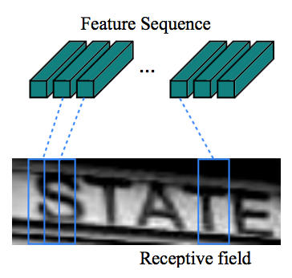

CTC (Connectionist Temporal Classification) 模型CRNN教程
CTC (Connectionist Temporal Classification) 模型CRNN教程
背景简介
现实世界中的序列学习任务需要从连续的输入序列中预测出对应标签序列， 比如语音识别任务从连续的语音中得到对应文字序列，类似于seq2seq任务； CTC相关模型就是实现此类seq2seq任务的的一类算法，具体地，CTC模型为输入序列中每个时间步做一次分类输出一个标签（CTC中 Classification的来源）， 最终对输出的标签序列处理成对应的输出序列（具体算法参见下文）。
CTC 算法在很多领域中有应用，比如手写数字识别、语音识别、手势识别、连续图像文字识别等，除去不同任务中的专业知识不同， 所有任务均为连续序列输入，标签序列输出。
本文将针对 场景文字识别 (STR, Scene Text Recognition) 任务，演示如何用 PaddlePaddle 实现 一个一站式 CTC 的模型 CRNN(Convolutional Recurrent Neural Network) [1]，该模型有如下比较显著的特点：
- 一站式训练，直接从原始数据到目标标签序列学习
- 不同于很多其他的算法，其输入图片不需要固定尺寸
- 模型更小，性能也更好，容易支持工业级应用
本文将涉及到PaddlePaddle如下特性：
layer.warp_ctc调用warp CTC实现 CTC layer.- 使用多层
conv_group快速构架深度 CNN - 使用
layer.block_expand将矩阵切割成固定大小的块序列
STR任务简介
在现实生活中，包括路牌、菜单、大厦标语在内的很多场景均会有文字出现，这些场景的照片中的文字为图片场景的理解提供了更多信息， Google 已经用AI算法自动识别路牌中的文字来获取街景更准确的地址[2]
在本教程中，我们使用的训练数据类似如下图片，需要识别为 “keep” 。

Figure 1. 数据示例 "keep"
模型介绍
论文[1] 中描述的模型的特点是，使用神经网络实现了一个一站式训练的模型，直接从图像输入数据预测出对应的文字标签。
模型的整体结构如下

Figure 2. CTC模型结构
从下往上的模块分别为
- Convolutional Layers, 自动提取图像特征；最终会产生一个矩形的图像映射，可以拆分成图像特征序列
- Recurrent Layers, 接受图像特征序列，并且在每个时间步上预测出对应标签（字符），所有时间步的字符组成字符串
- Transaction Layer, 将预测出的字符串加工成符合语法的单词，比如 -s-t-aatte 转化为 state
下面两个小节会详细介绍上面三个模块。
利用CNN进行图像特征序列提取
模型的第一步是特征的提取，对于图像任务，一般使用CNN来作为特征提取的基本模块。
为了能够兼容对不同尺寸的图片，比如下面 Figure 3中的两张图片，将其高度固定，就变成了长度不相同的图片。

Figure 3. 不同尺寸的图片
直接使用CNN应用到图片上，最后在pooling层会得到高度一致，但宽度不同的图像特征（矩阵），由于CNN中的卷积(convolution)和池化(pooling)两种操作均会在高层特征上综合每个局部区域像素级的特征， 因此在CNN最上层输出的特征表示中，每个像素均包含了原始图片中一个小的局部区域的信息。
CRNN将CNN输出特征表示（矩阵）按列切割成一个特征向量(可以称为Frame，帧)的序列，作为模型更上层结构的输入，如下图展示，这里的每个特征向量均表示了原始图像中一个窄的矩形的信息。

Figure 4. 图像特征序列
利用RNN建模序列信息
在上一阶段，CNN对原始图像学习到了特征向量的序列，CNN只能建模局部像素的信息，而RNN则进一步建模特征序列中包含的全局信息。
CTC 将特征序列中帧与目标标签序列的对应关系建模成一系列的多分类问题，具体地，为每一帧通过多分类模型生成一个标签，如此输入的特征序列会对应预测成标签序列，这个过程中，对输入特征序列建模的就是RNN。
论文中具体使用的RNN算法是LSTM（Long-Short Term Memory）, 此模型应用比较广泛，本教程中不再赘述。
RNN的每个时间步可以作多分类输出一个标签的分布（每个标签对应一个预测概率，所有标签的概率构成一个分布，可以表示为一个0~1间的浮点数向量），所有时间步会生成多个向量，也就是一个浮点数向量的序列。
比如下表中的演示，横向为各个实践步对应的帧，纵向为字符标签的概率分布向量（这里只列举了5种字符）
| Char/Probability | frame 0 | frame 1 | frame 3 |
|---|---|---|---|
| ‘e’ | 0.1 | 0.21 | 0.2 |
| ‘h’ | 0.3 | 0.1 | 0.12 |
| ‘a’ | 0.1 | 0.3 | 0.1 |
| ‘l’ | 0.2 | 0.2 | 0.22 |
| ‘o’ | 0.1 | 0.1 | 0.1 |
| … | … | … | … |
Table 1. RNN每个frame输出的标签分布示例
通过查找上表，很容易得到模型生成任何标签序列的概率，比如生成3个字符 “hel” 的概率的计算如下：
CRNN模型中继承了[3]中的CTC layer，
不同于经典NMT(Neural Machine Translation)中使用的beamsearch算法，CTC layer不会考虑已经生成的标签上文的信息，只考虑当前时间步生成某个标签的概率。
对应着标签的概率分布，会有多种映射从标签分布转化成目标序列，比如一个10个帧的输入特征序列要生成目标序列 “hello”，可以有如下映射方式(-表示空格)：
-h-el-ll-ohello-----h-e-l-lo- 其他若干
上面几种映射方式转化到目标序列 hello 有如下特点：
- 每种映射的长度相同，这个例子里长度都是10（RNN会为输入特征序列的每个帧得到一个标签的预测分布，这里有10个帧，对应10个标签）
- 假定不同的映射方式间概率独立
- 映射的序列，默认会去掉空格和连续重复的标签，比如
ll-o会变成lo
因此，模型生成目标序列的学习概率就变成了综合所有能生成目标序列的映射的概率之和，也就是
其中，$l$表示目标序列，$y$ 是标签分布的序列，$\pi$ 表示将预测出的序列分布转化为目标标签序列的映射。
训练和预测原理
| 对上节的 $p(l | y)$ 取log即得到模型在单条记录上的训练损失 $-\log p(l | y)$ 。 |
在预测时，模型输入图像，RNN生成标签的概率分布序列后，每个分布取最大概率对应的标签构成了一个标签序列 $l* $ ，再根据上面提到的一些规则生成最终的序列，
比如去空格和重复字符，比如预测到 $l*$ 为-h-el-ll-o ，对应转化为 hello 作为最终输出序列。
至此，CRNN模型的原理基本介绍完毕，输入原始的图片数据，CRNN会利用CNN来学习提取图像特征，转化为特征向量的序列，交由RNN学习； RNN会在为时间步生成标签的概率分布，所有标签分布会交由CTC layer获得生成目标序列的所有映射的概率求和，作为模型生成目标序列的预测概率（学习损失）。
用 PaddlePaddle 实现模型算法
图像数据及处理
本任务使用数据集[4]，数据中包括了图片数据和对应的目标文本，其中预测的目标文本需要转化为一维的ID列表，我们用如下类来实现
from __future__ import absolute_import
from __future__ import division
import os
from paddle.v2.image import load_image
import cv2
class AsciiDic(object):
UNK = 0
def __init__(self):
self.dic = {
'<unk>': self.UNK,
}
self.chars = [chr(i) for i in range(40, 171)]
for id, c in enumerate(self.chars):
self.dic[c] = id
def lookup(self, w):
return self.dic.get(w, self.UNK)
def word2ids(self, sent):
'''
transform a word to a list of ids.
@sent: str
'''
return [self.lookup(c) for c in list(sent)]
def size(self):
return len(self.chars)
包括图片处理在内的其他数据集处理封装在类 ImageDataset中：
class ImageDataset(object):
def __init__(self,
image_paths_generator,
fixed_shape=None,
testset_size=1000):
'''
@image_paths_generator: function
return a list of images' paths, called like:
for path in image_paths_generator():
load_image(path)
'''
self.filelist = [p for p in image_paths_generator]
self.fixed_shape = fixed_shape
self.testset_size = testset_size
self.ascii_dic = AsciiDic()
具体地，使用如下代码在载入图像，并作处理
def load_image(self, path):
'''
load image and transform to 1-dimention vector
'''
image = load_image(path)
image = cv2.cvtColor(image, cv2.COLOR_BGR2GRAY)
# resize all images to a fixed shape
if self.fixed_shape:
image = cv2.resize(
image, self.fixed_shape, interpolation=cv2.INTER_CUBIC)
# image = to_chw(image)
image = image.flatten() / 255.
return image
我们简单将前 $N$ 个记录作为测试集，将后面的记录作为训练集：
def train(self):
for i, (image, label) in enumerate(self.filelist):
if i > self.testset_size:
record = self.load_image(image), self.ascii_dic.word2ids(label)
yield record
def test(self):
for i, (image, label) in enumerate(self.filelist):
if i < self.testset_size:
yield self.load_image(image), self.ascii_dic.word2ids(label)
模型构建
构架模型的代码具体参见 model.py，我们使用了一个类 Model 来封装模型的结构，在模型的构造函数中直接构造完模型的结构。
class Model(object):
def __init__(self, num_classes, shape):
self.num_classes = num_classes
self.shape = shape
self.image_vector_size = shape[0] * shape[1]
self.__declare_input_layers__()
self.__build_nn__()
其中， num_classes 代表文本中字符组成字典的大小（多分类问题的类别数）。
接下来声明模型的输入数据类型:
def __declare_input_layers__(self):
self.image = layer.data(
name='image',
type=paddle.data_type.dense_vector(self.image_vector_size),
height=self.shape[0],
width=self.shape[1])
self.label = layer.data(
name='label',
type=paddle.data_type.integer_value_sequence(self.num_classes))
很明显，image 是一个float 的向量表示 dense_vector ，而label 代表了文本中字符的 id列表，因此是一个 integer_value_sequence 。
接着构建CNN模块，我们使用多个 img_conv_group 来构建一个深层的CNN网络，PaddlePaddle 中的 img_conv_group 打包了CNN常用的结构，
包括一系列的 Conv （卷积）、BN（batch normalization)、Relu (RELU激活函数)、Pooling (池化)等操作。
这里我们使用了4个 img_conv_group ：
def ctc_convs(input_image, num, with_bn):
'''
A deep CNN.
@input_image: input image
@num: number of CONV filters
@with_bn: whether with batch normal
'''
assert num % 4 == 0
tmp = img_conv_group(
input=input_image,
num_channels=1,
conv_padding=1,
conv_num_filter=[16] * (num / 4),
conv_filter_size=3,
conv_act=Relu(),
conv_with_batchnorm=with_bn,
pool_size=2,
pool_stride=2, )
tmp = img_conv_group(
input=tmp,
conv_padding=1,
conv_num_filter=[32] * (num / 4),
conv_filter_size=3,
conv_act=Relu(),
conv_with_batchnorm=with_bn,
pool_size=2,
pool_stride=2, )
tmp = img_conv_group(
input=tmp,
conv_padding=1,
conv_num_filter=[64] * (num / 4),
conv_filter_size=3,
conv_act=Relu(),
conv_with_batchnorm=with_bn,
pool_size=2,
pool_stride=2, )
tmp = img_conv_group(
input=tmp,
conv_padding=1,
conv_num_filter=[128] * (num / 4),
conv_filter_size=3,
conv_act=Relu(),
onv_with_batchnorm=with_bn,
pool_size=2,
pool_stride=2, )
return tmp
接着组合出CNN模块：
def __build_nn__(self):
# CNN output image features, 128 float matrixes
conv_features = ctc_convs(self.image, 8, True)
...
接着我们把CNN产生的特征按列分割成特征向量序列，这里用到 layer.block_expand ，也就是按 x 轴和 y 轴切割特征（矩阵）得到特征序列。
def __build_nn__(self):
# CNN output image features, 128 float matrixes
conv_features = ctc_convs(self.image, 8, True)
# cutting CNN output into a sequence of feature vectors, which are
# 1 pixel wide and 11 pixel high.
sliced_feature = layer.block_expand(
input=conv_features,
num_channels=128,
stride_x=1,
stride_y=1,
block_x=1,
block_y=11)
这里， layer.block_expand 的设定包括指定特征序列步长的大小 (block_x, block_y) ，这里是，x 方向 1个像素，y 方向 11 个像素（对应CNN输出特征矩阵的高），两个方向上的步长(stride)都是1个block，最终 sliced_feature 就是像素尺寸 (1, 11) 的特征向量序列。
此特征向量序列会传入给RNN模块：
# RNNs to capture sequence information forwards and backwards.
gru_forward = simple_gru(input=sliced_feature, size=128, act=Relu())
gru_backward = simple_gru(
input=sliced_feature, size=128, act=Relu(), reverse=True)
这里使用了 simple_gru 是比 LSTM 简单一些的RNN实现，这里主要为了性能考虑，对于一个确定的序列，
我们使用了 simple_gru 分别对其正反顺序均作了建模：一组GRU从前往后学习；另外一组从后往前；对应着学习到了两个state序列。
接着，我们整合两个state序列的信息，将其输出为标签分布向量的序列：
# map each step of RNN to character distribution.
self.output = layer.fc(
input=[gru_forward, gru_backward],
size=self.num_classes + 1,
act=Linear())
上面利用了一个 fc 全连接层，注意其输入时 input=[gru_forward, gru_backward]
将 gru_forward 和 gru_backward 对应位置按元素求和，
之后利用 fc 映射为维度 self.num_classes + 1 的向量（多出来的1表示空格），
多个时间步会构成一个序列。
接下来就是输入给 CTC layer，这里我们使用了 对应warp CTC[5] 的封装 layer.warp_ctc ：
# warp CTC to calculate cost for a CTC task.
self.cost = layer.warp_ctc(
input=self.output,
label=self.label,
size=self.num_classes + 1,
norm_by_times=True,
blank=self.num_classes)
具体的参数包括，传入前面 fc 生成的标签分布的向量序列 self.output 以及目标标签序列 self.label ，标签字典的大小 self.num_classes+1 ， 按时间步归一设 True ，空格对应的类别 ID 为 self.num_classes 。
至此模型的配置基本完毕，接下来介绍训练的配置：
载入数据集：
dataset = ImageDataset(
get_file_list(args.file_list),
fixed_shape=image_shape, )
训练及模型存储相关的设置：
paddle.init(use_gpu=True, trainer_count=args.trainer_count)
model = Model(AsciiDic().size(), image_shape)
params = paddle.parameters.create(model.cost)
optimizer = paddle.optimizer.Momentum(momentum=0)
trainer = paddle.trainer.SGD(
cost=model.cost, parameters=params, update_equation=optimizer)
def event_handler(event):
if isinstance(event, paddle.event.EndIteration):
if event.batch_id % 20 == 0:
print "Pass %d, batch %d, Samples %d, Cost %f" % (
event.pass_id, event.batch_id,
event.batch_id * args.batch_size, event.cost)
if event.batch_id > 0 and event.batch_id % args.save_period_by_batch == 0:
result = trainer.test(
reader=paddle.batch(dataset.test, batch_size=10),
feeding={'image': 0,
'label': 1})
print "Test %d-%d, Cost %f" % (event.pass_id, event.batch_id,
result.cost)
path = "{}-pass-{}-batch-{}-test-{}.tar.gz".format(
args.model_output_prefix, event.pass_id, event.batch_id,
result.cost)
with gzip.open(path, 'w') as f:
params.to_tar(f)
trainer.train(
reader=paddle.batch(
paddle.reader.shuffle(dataset.train, buf_size=100),
batch_size=args.batch_size),
feeding={'image': 0,
'label': 1},
event_handler=event_handler,
num_passes=1000)
运行训练和测试
训练脚本参照 ./train.py，设置了如下命令行参数：
usage: train.py [-h] --image_shape IMAGE_SHAPE --file_list FILE_LIST
[--batch_size BATCH_SIZE]
[--model_output_prefix MODEL_OUTPUT_PREFIX]
[--trainer_count TRAINER_COUNT]
[--save_period_by_batch SAVE_PERIOD_BY_BATCH]
[--num_passes NUM_PASSES]
PaddlePaddle CTC example
optional arguments:
-h, --help show this help message and exit
--image_shape IMAGE_SHAPE
image's shape, format is like '173,46'
--file_list FILE_LIST
path of the file which contains path list of image
files
--batch_size BATCH_SIZE
size of a mini-batch
--model_output_prefix MODEL_OUTPUT_PREFIX
prefix of path for model to store (default:
./model.ctc)
--trainer_count TRAINER_COUNT
number of training threads
--save_period_by_batch SAVE_PERIOD_BY_BATCH
save model to disk every N batches
--num_passes NUM_PASSES
number of passes to train (default: 1)
其中最重要的几个参数包括：
image_shape图片的尺寸file_list图片文件的列表文件（每行一个路径加对应的text，格式类似 “./1.png, hello”）
具体执行的过程：
- 从官方下载数据[4]，解压缩，应该会得到一个目录 90kDICT32px
- 获取训练数据文件夹中
train_all.txt的路径 (假定为<filelist>） - 执行命令
python train.py --file_list <filelist>–image_shape ‘173,46’ - 训练过程中，模型参数会自动备份到指定目录，默认为 ./model.ctc
写在最后
有用的数据集
下面列出一些可用的数据集作为参考：
一些注意事项
- 由于模型依赖的
warp CTC只有CUDA的实现，本模型只支持 GPU 运行 - 本模型参数较多，占用显存比较大，实际执行时可以调节batch_size 控制显存占用
- 本模型使用的数据集有40G，可以跑其中一小部分做实验，或者选用其他小的数据集
参考文献
- Shi B, Bai X, Yao C. An end-to-end trainable neural network for image-based sequence recognition and its application to scene text recognition[J]. IEEE Transactions on Pattern Analysis and Machine Intelligence, 2016. APA
- Google Now Using ReCAPTCHA To Decode Street View Addresses
- Graves A, Fernández S, Gomez F, et al. Connectionist temporal classification: labelling unsegmented sequence data with recurrent neural networks[C]//Proceedings of the 23rd international conference on Machine learning. ACM, 2006: 369-376.
- SynthText in the Wild Dataset
- warp CTC github